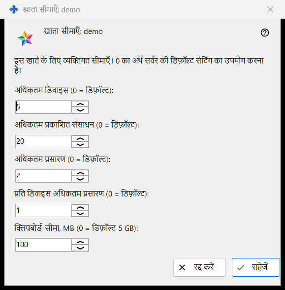
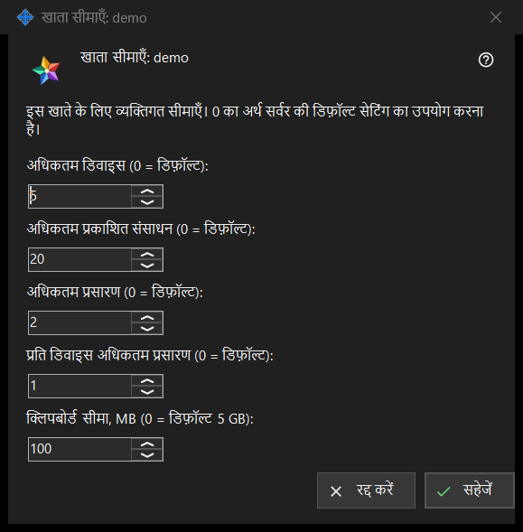

खाता सीमाएँ
यह किस लिए है
आपके चलाए Media Exchange Server के एक खाते की अलग-अलग सीमाएँ तय करता है; 0 छोड़ा गया मान सर्वर के डिफ़ॉल्ट का पालन करता है। यह Share Manager की सेटिंग के Media Exchange Server पेज पर खातों की सूची के नीचे के सीमाएँ.. बटन से खुलती है, जो खाता चुनने पर दिखता है। शीर्षक में खाते का नाम होता है: खाता सीमाएँ: <लॉगिन>।


इस क्रम में
- खाता चुनें और सीमाएँ.. दबाएँ।
- जिस सीमा को बदलना है उसके लिए संख्या डालें, और सर्वर के डिफ़ॉल्ट के लिए 0 छोड़ें।
- सहेजें दबाएँ।
- परिणाम की पंक्ति पढ़ें: खाते <लॉगिन> की सीमाएँ सहेजी गईं।
तत्व
डिवाइस और संसाधन
अधिकतम डिवाइस (0 = डिफ़ॉल्ट) तय करता है कि खाते में कितने डिवाइस साइन इन हो सकते हैं। अधिकतम प्रकाशित संसाधन (0 = डिफ़ॉल्ट) तय करता है कि खाता सर्वर पर कितने साझा फ़ोल्डर और अन्य संसाधन प्रकाशित कर सकता है।
प्रसारण
अधिकतम प्रसारण (0 = डिफ़ॉल्ट) पूरे खाते के प्रसारणों की सीमा तय करता है, और प्रति डिवाइस अधिकतम प्रसारण (0 = डिफ़ॉल्ट) तय करता है कि उसका एक डिवाइस कितने शुरू कर सकता है।
क्लिपबोर्ड सीमा
क्लिपबोर्ड सीमा, MB (0 = डिफ़ॉल्ट 5 GB) सर्वर पर खाते के क्लिपबोर्ड में भेजा जा सकने वाला सबसे बड़ा मान तय करती है, पूरे मेगाबाइट में। छोटी इकाइयों में सहेजी गई सीमा, उदाहरण के लिए 512 KB, 0 दिखती है और जब तक आप इस फ़ील्ड को नहीं छूते, अपना सटीक आकार बनाए रखती है।
सहेजें और रद्द करें
सहेजें खाते की अपनी सीमाओं को एक साथ बदल देता है: 0 से बड़ी हर संख्या सीमा बन जाती है, हर 0 का अर्थ सर्वर का डिफ़ॉल्ट है, और पाँच शून्य खाते के सभी अपने मान हटा देते हैं। रद्द करें कुछ नहीं बदलता। यदि सर्वर कोई मान अस्वीकार करे, तो परिणाम की पंक्ति कारण बताती है, उदाहरण के लिए: सीमा की अनुमति नहीं है: यह सर्वर द्वारा स्वीकार की जाने वाली सीमा के भीतर एक पूर्णांक होना चाहिए।
प्रबंधक सेटिंग · SFTP साझाकरण सेटिंग · एक्सचेंज सर्वर सेटिंग